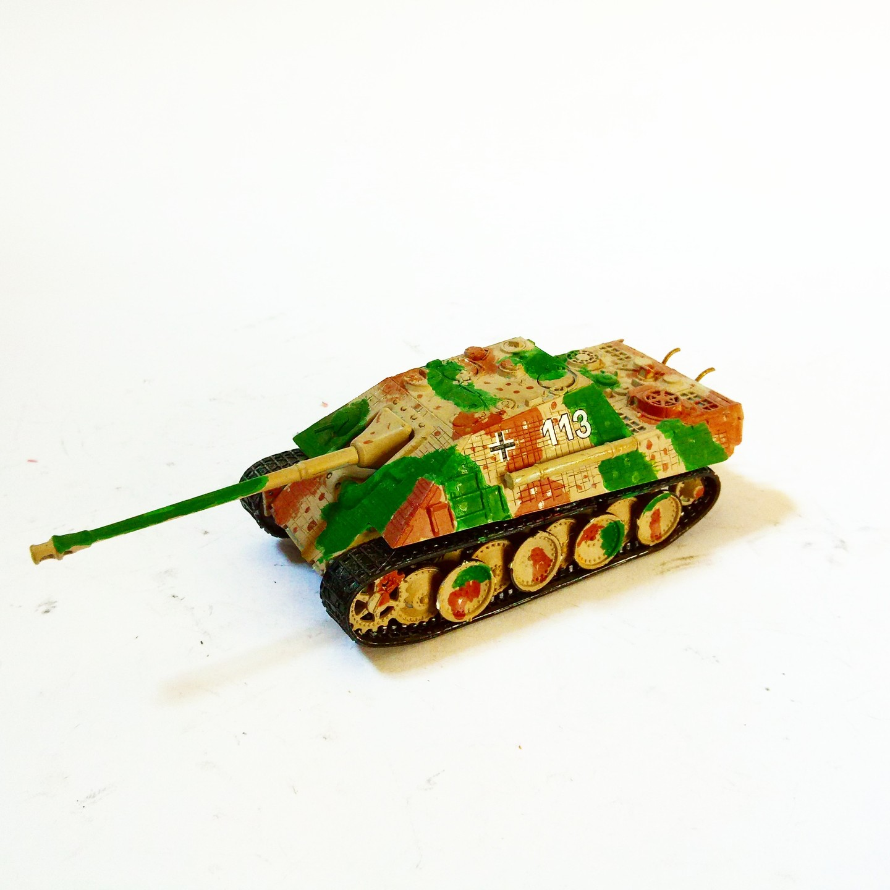

Mezzi militari · scale model archive
schwere Panzerjäger mit 8,8-cm-Pak L/71 auf Fgst. Panther (später „Jagdpanther“) (Sd.Kfz. 173)
schwere Panzerjäger mit 8,8-cm-Pak L/71 auf Fgst. Panther (später „Jagdpanther“) (Sd.Kfz. 173) — Kit: Revell, Scale: 1/72. s.Pz.Jg.Abt. 654 France Juli…

Photo gallery
English description
s.Pz.Jg.Abt. 654 France Juli 1944
#1/72 #Revell
Descrizione italiana
s.Pz.Jg.Abt. 654 France Juli 1944.